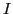
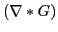

GeodesicActiveContourLevelSetFunction is a subclass of the generic LevelSetFunction. It is used to segment structures in an image based on a user supplied edge potential map , which has values close to zero in regions near edges (or high image gradient) and values close to one in regions with relatively constant intensity. Typically, the edge potential map is a function of the gradient, for example:
where  is image intensity and  is the derivative of Gaussian operator.
In this function both the propagation term and the curvature spatial modifier term are taken directly from the edge potential image such that:
An advection term is constructed from the negative gradient of the edge potential image.
This term behaves like a doublet attracting the contour to the edges.
This implementation is based on: [1]
Segments structures in images based on a user supplied edge potential map.
This class is a level set method segmentation filter. An initial contour is propagated outwards (or inwards) until it ''sticks'' to the shape boundaries. This is done by using a level set speed function based on a user supplied edge potential map.